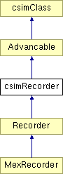

csimRecorder Class Reference
#include <recorder.h>
Inheritance diagram for csimRecorder:

List of all members.
Detailed Description
Implements an object which can record fields from other objects.
Public Attributes
-
double dt
- The timestep at which an recording should be done (no meaning if recording spikes). [units=sec; range=(0,100)].
-
double Tprealloc
- Provide your best guess how long the network will be simulated (in simulation time). [units=sec; range=(0,100)].
-
int enabled
- Flag: 0 ... recorder disabled, 1 ... recoder enabled [range=(0,1)];.
Protected Attributes
Private Member Functions
Classes